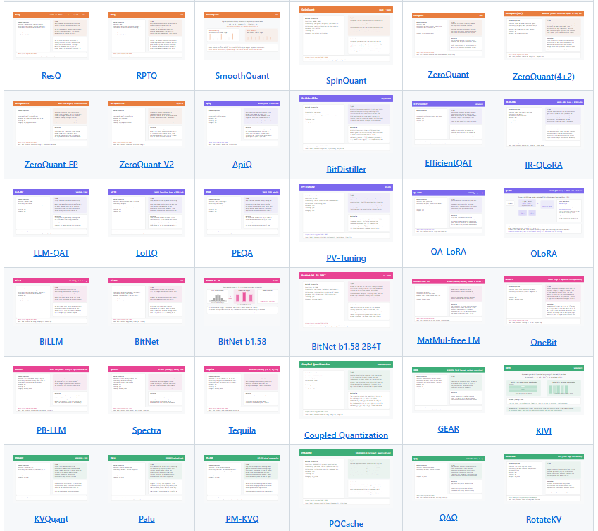
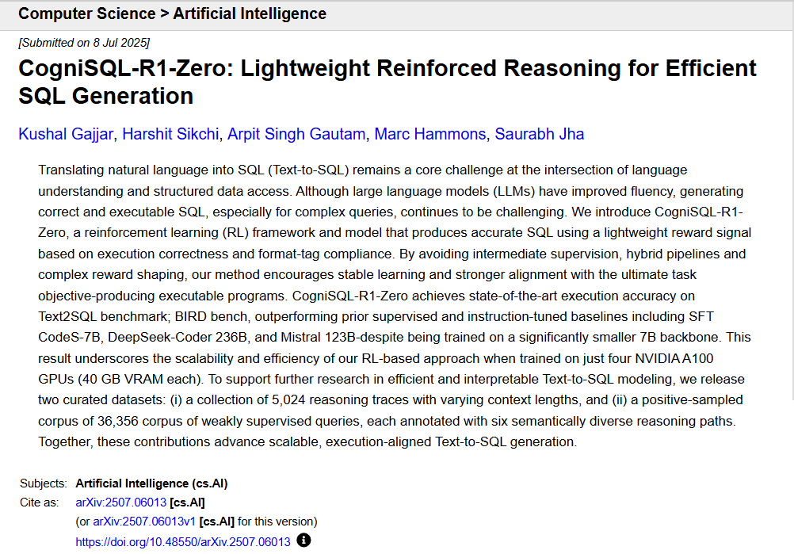
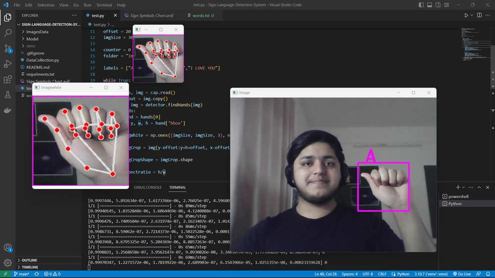
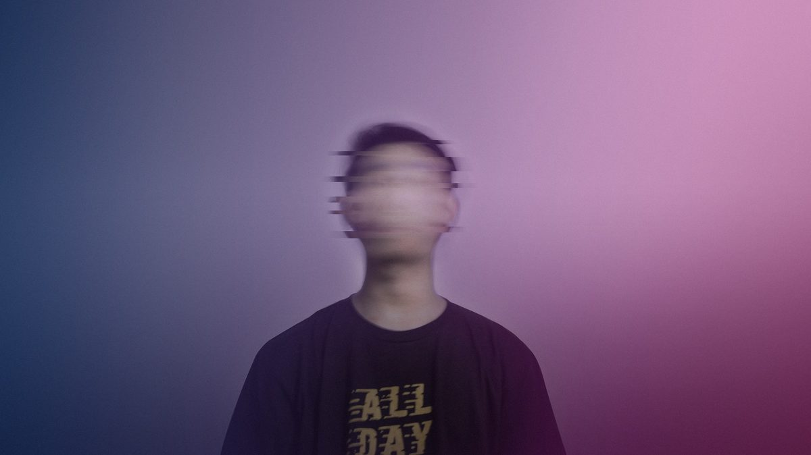
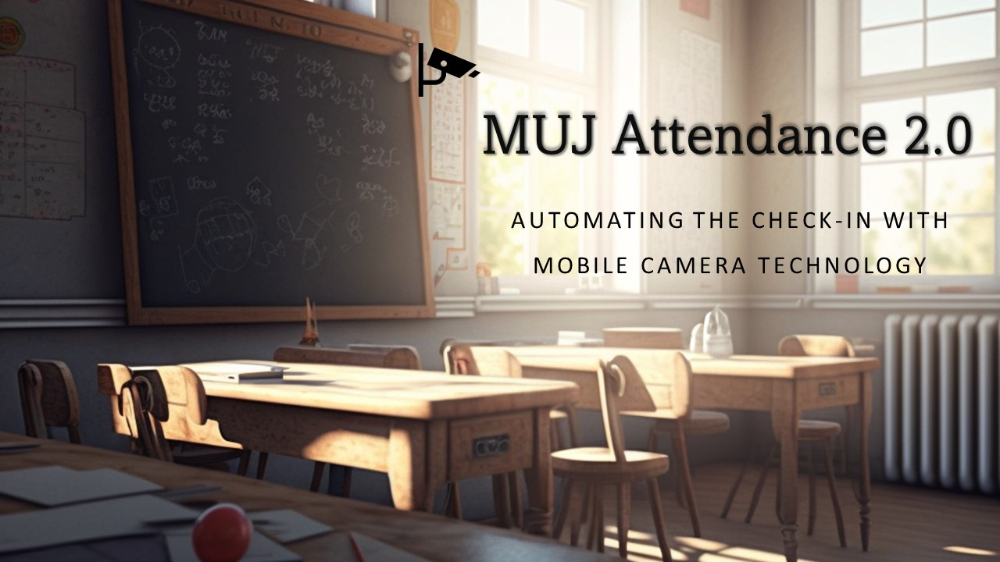

Projects
Research tools, ML systems, and open-source work.
Research & AI Systems

SAIR Mathematics Distillation Challenge 29th of 1000+
SAIR Foundation challenge (Terence Tao, Damek Davis): distilled equational-implication reasoning over magmas into a 7.44 KB two-phase decision-procedure cheatsheet, smaller and cheaper than the 1st-place entry. Read the writeup.
2026 · Stage 1, 1000+ entrants

ARC-AGI-3 Challenge Ongoing
Competing in François Chollet's ARC-AGI-3 - one of AI's hardest benchmarks for fluid intelligence and abstract reasoning. Exploring learning-based and program synthesis approaches beyond random baselines.
2026 · Kaggle submission ↗

LLM Quantization Gallery
An interactive gallery exploring quantization techniques for large language models - comparing methods, quality metrics, and model sizes.
2025

CogniSQL-R1-Zero
Lightweight reinforced reasoning model for Text-to-SQL using GRPO RL and DeepSpeed distributed training on a 7B backbone. SOTA on the BIRD benchmark, outperforming 236B+ models.
2025 · arXiv
Computer Vision & ML

American Sign Language Recognition System
Real-time ASL hand sign detection using OpenCV, cvzone HandDetector, and a Keras classification model trained on 7 signs.
Nov 2022

Buddy AI Assistant
AI assistant for object identification using computer vision and NLP. Identifies tourist attractions, animals, plants and converts descriptions to audio via TTS.
Mar 2020

Face Scrambler
Real-time privacy protection system using facial recognition to blur faces in video streams. Built with OpenCV and face_recognition library.
2023

MUJ Attendance 2.0
AI-based attendance tracking system using face recognition via mobile camera. Supports multiple faces, automated email notifications, and real-time tracking.
2023

Crime Analysis & Prediction
Web application using ML algorithms to analyze crime patterns and predict criminal activity from law enforcement and social media data.
2023
Tools & Applications

Demand Forecasting Tool
Standalone forecasting application with multiple ML models, data upload, forecast generation, and exportable outputs. Trained on universal demand data.
2023

Recipe Genie Pad
Web app that identifies dishes from photos and suggests recipes. Built with Streamlit, Keras (InceptionV3), and Selenium for automated food delivery search.
2023

OS Scheduling Algorithms Simulator
Interactive simulator for FCFS, Priority, and Round Robin scheduling algorithms. Built with Streamlit, Pandas, and Matplotlib for visualization.
2023